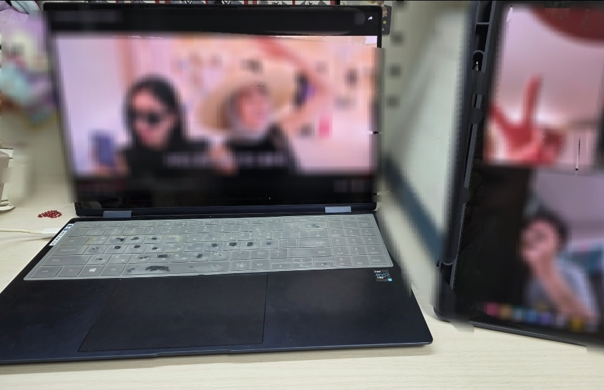
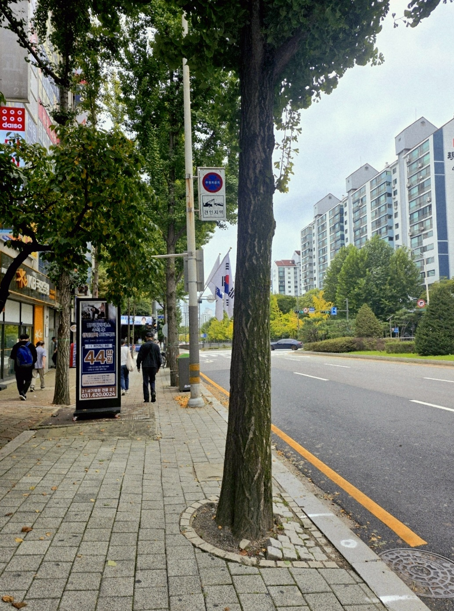

10.8- 혼자 보낸 연휴의 하루

연휴가 얼마 남지 않은 시점이라 마무리하지 못했던 과제를 완성하고, 부족한 부분을 다듬는 시간을 가졌다. 혼자 있는 동안에는 집중이 잘 되어 평소보다 효율적으로 과제를 진행할 수 있었다. 하지만 오래 앉아 있다 보니 조금 지치기도 해서 잠시 쉬는 시간에는 친구들과 영상통화를 틀어두고 넷플릭스나 웨이브 같은 사이트를 통해 함께 드라마나 영화를 보며 머리를 식혔다. 이렇게 과제와 휴식을 하며 조용하지만 의미 있는 하루를 보냈다.
10.9- 연휴의 마지막

연휴의 마지막 하루는 미뤄두었던 방 청소를 하면서 시작했다. 여유 있을 때 미리 정리를 해두는 게 좋을 것 같았기 때문이다. 청소를 마친 후에는 가족들과 함께 식사를 하고, 평소에 오래 하지 못했던 취미 생활을 즐겼다. 노래를 들으며 그림을 그리기도 하고, 만화책을 읽으며 시간을 보내기도 했다. 오후에는 서점을 둘러보고 근처를 산책하며 여유로운 하루를 마무리했다. 이렇게 이번 추석 연휴는 가족들, 친구들과 시간을 보내기도하고 나만의 여유있는 시간을 보내기도 하였다. 다시 일상으로 돌아가야 한다는 아쉬움도 있지만 연휴를 충분히 즐긴만큼 만족스럽게 새로운 한 주를 시작할 수 있을 것 같다.